3. Module 13: Introduction to 3D Data#
3.1. 13.0 Overview#
Welcome to Module 13 of the YouthMappers Academy. This module explores three-dimensional (3D) geospatial data, covering data formats, standards, and a wide range of applications in development.
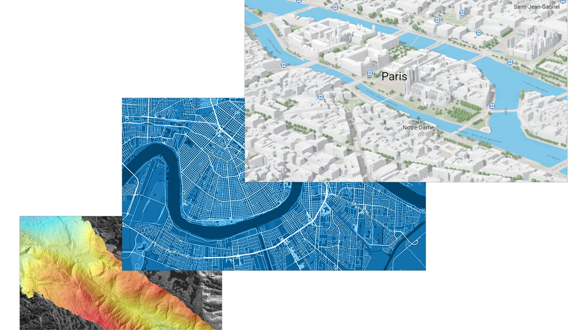 Image source: Esri UK. (n.d.). 3D GIS overview [Image]. Esri UK. Retrieved February 5, 2025, from https://www.esriuk.com/en-gb/arcgis/3d-gis/overview
You will learn how 3D data is collected through technologies like LiDAR, photogrammetry, and ground surveying, and how it can be integrated into OpenStreetMap (OSM) for mapping urban and natural environments. We will also discuss best practices for visualizing 3D data using tools such as Cesium, QGIS, and ArcGIS.
3D geospatial data enhances decision-making, planning, and communication among development stakeholders, with critical applications in urban planning, disaster response, infrastructure management, and sustainability efforts aligned with the UN Sustainable Development Goals (SDGs).

Image source: Cesium. (2020, June 1). Cesium OSM Buildings [Image]. Cesium. Retrieved February 5, 2025, from https://cesium.com/blog/2020/06/01/cesium-osm-buildings/
3.1.1. What you will learn#
You will learn about three dimensional data formats, models and standards.
You will explore the primary methods of collecting 3D geospatial data, including LiDAR, photogrammetry, InSAR, and ground surveying.
You will compare and evaluate different three-dimensional data sources and tools
You will explore key applications of 3D geospatial data, including urban planning, disaster response, environmental sustainability, and humanitarian mapping.
You will learn about best practices and tools for three dimensional data visualization.
You will develop hands-on skills in collecting and integrating simple 3D data in the field using mobile tools like FieldPapers and Vespucci.
You will learn how three dimensional data can be incorporated into the OSM data model and the best tools and workflows to facilitate this.
3.2. 13.1 Introduction to 3D Data#
3.2.1. What is 3D data?#
In Geographic Information Systems (GIS), 3D data refers to spatial data that includes a third dimension—the Z-coordinate—which represents height, depth, or elevation. Unlike traditional 2D GIS, which maps features on a flat plane, 3D GIS enables more detailed, realistic, and interactive visualizations of geographic space.
3.2.2. Why is 3D Data Important?#
3D GIS is widely used across various industries, including:
Urban Planning – Visualizing city skylines, zoning impacts, and infrastructure projects.
Disaster Response – Modeling floods, landslides, and evacuation routes.
Architecture & Construction – Creating accurate 3D models of buildings and infrastructure.
Environmental Studies – Analyzing terrain, climate change, and natural resource distribution.
3.2.3. How is 3D GIS Data Represented?#
3D GIS data is classified based on how it stores and represents the third dimension. The two primary formats are:
Vector-based representations – Use points, lines, and polygons to define 3D objects.
Raster-based representations – Use grid cells to model elevation (e.g., Digital Elevation Models).
3.2.4. Vector-Based 3D Data#
Vector data represents specific locations and objects in 3D space. It includes:
Points (Discrete Locations)
Points represent discrete locations in 3D space, defined by X (longitude), Y (latitude), and Z (height or elevation) coordinates. For example, points can indicate the location of a tree, a communication mast, or a sensor. In addition to spatial coordinates, they may include attributes such as the species of a tree, the model type of a sensor, or the ID number of a radio mast or antenna.
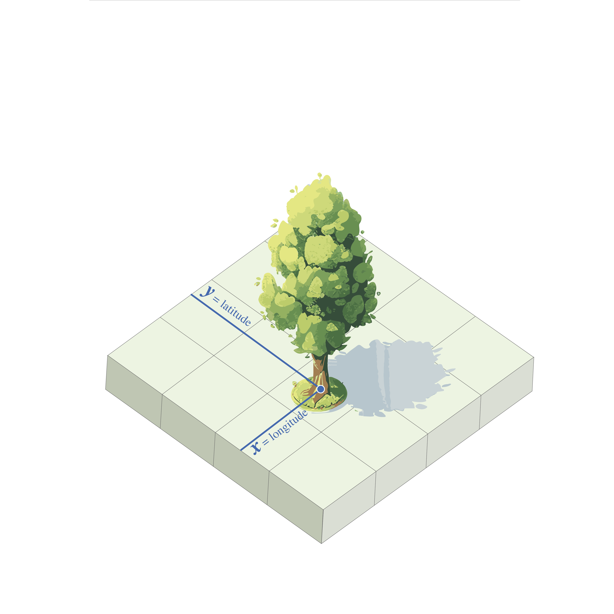 2D Image: A 2D point represents a location on a flat surface, defined by its X and Y coordinates. It does not have depth, height, or any physical dimensions—only its position on the 2D plane is described. In this example, the location of the tree is specified in terms of where it stands on the ground, but no information is given about the tree’s height or other attributes.
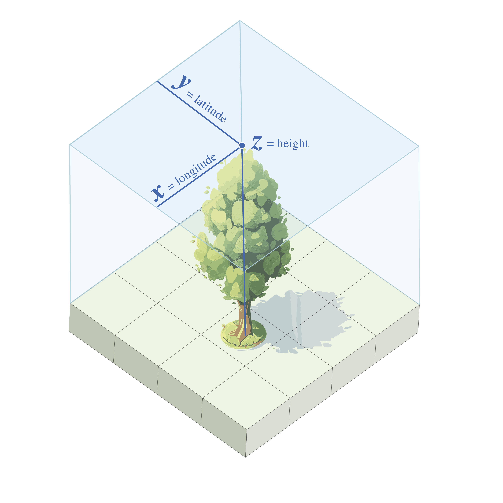 3D Image: A 3D point represents a location in three-dimensional space, defined by its X, Y, and Z coordinates. In this example, the tree’s exact location on the ground is combined with the added dimension of height, allowing us to understand both where the tree is and how tall it is, introducing depth to the spatial representation.
Polylines (Linear Features)
Polylines represent continuous objects such as roads, rivers, or utility lines in 3D space. Unlike simple 2D lines, each vertex in a polyline can have a unique Z-value, allowing it to capture elevation changes along its path.
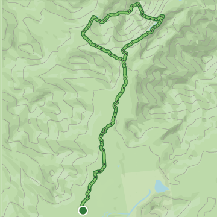 2D Caption: A 2D polyline represents a hiking trail viewed from above, where only the X and Y coordinates (longitude and latitude) are displayed. The line shows the trail’s path on the horizontal plane but does not convey any information about elevation changes encountered during the hike.
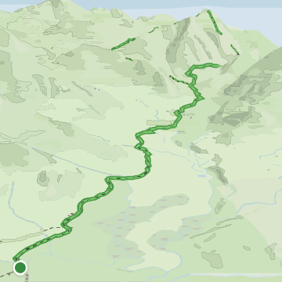 3D caption: A 3D polyline displays the hiking trail with elevation data included, represented by the Z-coordinate. In this visualization, the trail not only shows its path on the horizontal plane (X and Y coordinates) but also illustrates how elevation changes throughout the hike. Each vertex of the polyline can hold a different elevation, providing a more accurate representation of the trail’s vertical profile as it ascends and descends over the terrain.
Polygons (Surfaces)
Polygons represent bounded areas, such as building footprints or land parcels, with added height attributes to extend them into 3D space.
Polygons with height data are often referred to as “Extruded 2D Data” or “2.5D Data” because they are essentially 2D polygons with an associated height value, rather than fully detailed 3D models. This type of representation is commonly used for simple 3D features, such as buildings in a city model.
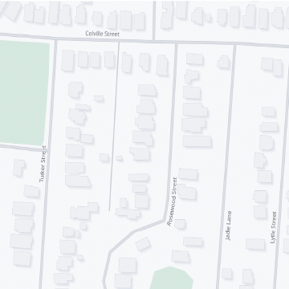 2D Caption: A 2D building footprint represents the outline of a building on a flat surface, using only X and Y coordinates. These footprints show building locations and shapes but do not provide any information about their height or vertical dimensions.
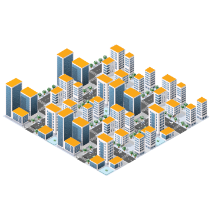 3D Caption: A 3D extruded building extends the footprints vertically by incorporating a Z-coordinate to represent building height. This provides a more realistic view, showing not only the location of the buildings but also their height and volume, offering a better sense of scale and structure in the urban landscape.
3.2.5. Sub 13.1.4: Raster-Based 3D Data#
Using a raster grid to represent elevation is commonly referred to as a Digital Elevation Model (DEM). A DEM consists of a grid of cells, where each cell stores the elevation value at that specific location on the Earth’s surface.
While DEMs are often classified as 2.5D—since they do not fully capture complex structures like overhangs—they serve as a foundation for 3D GIS applications.
DEMs are categorized into two main types:
Digital Terrain Models (DTMs): Represent the bare Earth’s surface, excluding buildings, trees, or other structures. They are used for topographic analysis and hydrological modeling.
Digital Surface Models (DSMs): Capture both natural and man-made features, including buildings, vegetation, and infrastructure, providing a more detailed representation of the Earth’s surface.
By subtracting a DTM from a DSM, we can determine building heights, tree canopy cover, and other structural details—a crucial process for exposure mapping and urban analysis. Additionally, other topographical products can be derived from DTMs, such as slope and aspect, which help analyze terrain characteristics.
3.2.6. Advanced 3D Models#
Some applications require more detailed or flexible 3D representations to accurately capture complex surfaces and terrain features.
1. Triangulated Irregular Networks (TINs):
A TIN represents surfaces using non-uniformly spaced points connected by triangles. Each triangle vertex is assigned an elevation value, and together, these triangles form a continuous surface that represents terrain variations.
TINs are particularly useful for modeling terrain with varying resolutions, as they allow greater detail in areas with complex elevation changes while using fewer data points in flatter areas. This makes them an effective tool for topographic analysis, hydrological modeling, and 3D surface visualization.
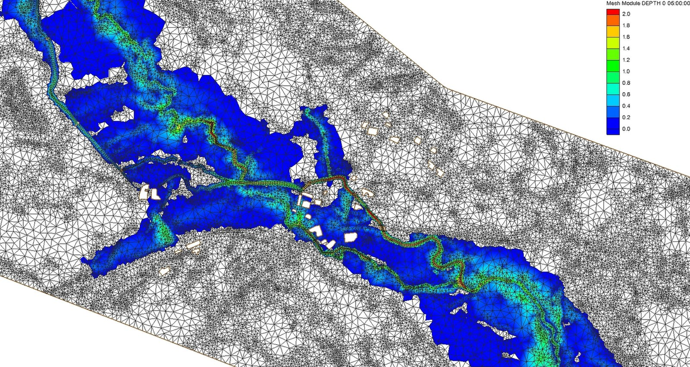
Attribution: By AlpSInnsbruck - Own work, CC BY-SA 4.0, https://commons.wikimedia.org/w/index.php?curid=35634426
Image caption: Triangulated Irregular Network (TIN) visualizing terrain elevation with interconnected triangular facets for geographic modeling.
2. 3D Mesh Models
3D mesh models consist of vertices, edges, and faces that together define the shape and structure of a 3D object. These models are widely used for visualizing buildings, terrain, and other complex structures with a high level of detail.
Mesh models can be highly detailed, making them useful for applications such as urban planning, simulations, and geospatial visualization. They are commonly used in 3D mapping software, game engines, and virtual reality environments to create realistic and interactive representations of geographic spaces.
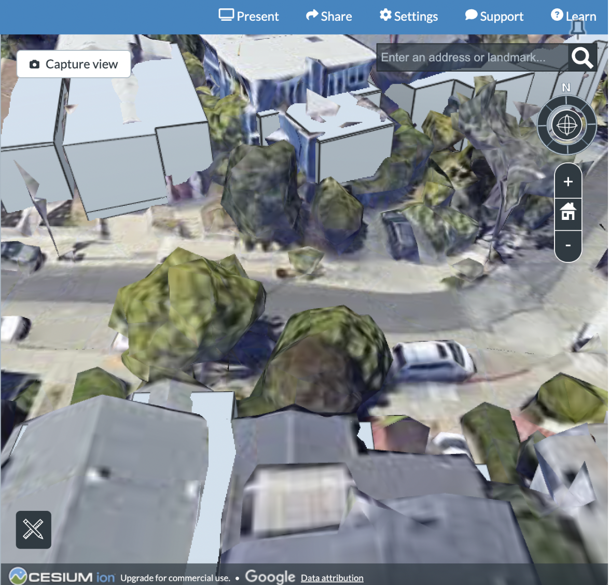
Image caption: Screenshot of the Cesium Ion Story interface displaying a 3D mesh model layer of a city section, showcasing detailed urban terrain visualization and geospatial analysis.
3. 3D Point Clouds:
3D point clouds are collections of data points (XYZ coordinates) in three-dimensional space, typically generated by LiDAR or photogrammetry. These data points represent the shape and structure of objects or surfaces, making point clouds an essential tool for creating detailed 3D models of the Earth’s surface, buildings, vegetation, and other physical features.
Point clouds are widely used in geospatial analysis, construction, and environmental modeling, as they provide highly accurate representations of real-world structures and landscapes.
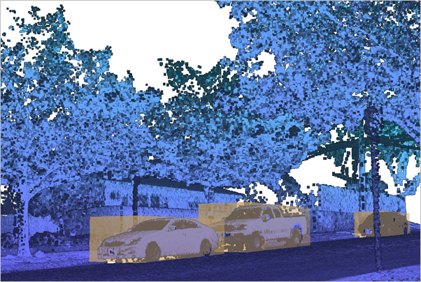 Image caption: 3D point cloud depicting the terrain and landscape.
3.2.7. 3D Data Standards#
3D geospatial data standards are essential for ensuring interoperability, accuracy, and consistency across different platforms and applications. Organizations like the Open Geospatial Consortium (OGC) and ISO have developed standards to facilitate the exchange and integration of 3D spatial data across industries.
Notable standards include:
CityGML – An XML-based data model designed for representing 3D urban environments.
IndoorGML – Focuses on the modeling of indoor spaces for navigation and spatial analysis.
3D Tiles – A specification developed for efficient streaming and visualization of massive 3D geospatial datasets on the web.
KML and COLLADA – Common formats that support 3D representations in platforms like Google Earth and CAD systems.
These standards are crucial for data sharing, reducing redundancy, and ensuring accuracy in 3D geospatial datasets. They play a key role in applications such as urban planning, environmental monitoring, navigation, and virtual reality experiences.
3D Tiles: 3D Tiles is an open-source format designed to enable the efficient streaming and visualization of large-scale 3D geospatial datasets. This format optimizes rendering performance by breaking down complex 3D models into smaller, manageable chunks, allowing massive datasets to be displayed seamlessly in web-based and mobile applications.
Originally developed by Cesium in 2015 to facilitate streaming heterogeneous 3D geospatial datasets, 3D Tiles was later adopted as a community standard by the Open Geospatial Consortium (OGC) in 2019.
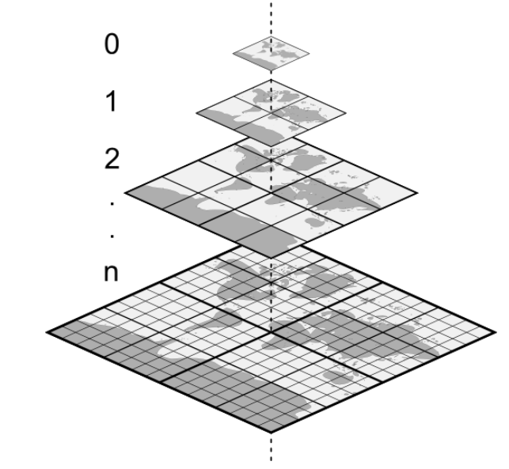
In Focus: Combining 3D Tiles and OSM
Developed by Cesium, 3D Tiles is an open standard designed for streaming large-scale 3D geospatial data efficiently. It allows complex 3D datasets—such as buildings, terrain, point clouds, and vector data—to be rendered smoothly in web applications.
The hierarchical structure of 3D Tiles enables progressive loading, meaning data is displayed based on the user’s view. This system, known as Level of Detail (LOD), ensures optimal performance when visualizing massive datasets.
OpenStreetMap (OSM) is a collaborative mapping project that provides free, editable geographic data. It includes geospatial information such as road networks, buildings, land use, and points of interest. Because OSM data is open-source, developers can access, modify, and integrate it freely into various applications.
Steps for Using OSM Data to Generate 3D Tiles:
Extract Building Geometry from OSM: OSM contains building footprints and, in many cases, height attributes. These can be processed to generate 3D building models that are stored in 3D Tiles formats (e.g., B3DM or I3DM).
Use Height Data: Many cities in OSM include building heights or floor counts, allowing for the creation of extruded 3D models.
Convert Data with Tools: Software such as osm2world, FME (by Safe Software), and Cesium ion can be used to convert OSM data into 3D Tiles. Cesium ion supports direct uploads of OSM data, generating 3D Tiles automatically.
Tile Generation for Scalability: Large cities or extensive datasets can be tiled into smaller sections, ensuring efficient real-time streaming and rendering in platforms like CesiumJS.
3D Mapping with CesiumJS
CesiumJS is the primary open-source 3D mapping library that supports 3D Tiles and OSM data integration. It provides an API for advanced visualizations, allowing 2D OSM data to be referenced alongside 3D Tiles models for an interactive mapping experience.
Benefits of Combining 3D Tiles and OSM:
Open Data: OSM provides free, publicly available geographic data, which can be transformed into high-quality 3D representations using 3D Tiles.
High Performance: 3D Tiles are optimized for efficient streaming, making them ideal for real-time web-based rendering.
Interactivity: The integration of OSM with 3D Tiles allows for a more immersive and dynamic mapping experience, enhancing user engagement and data visualization.
For Further Learning:
Each type of 3D GIS data serves specific purposes and applications, ranging from basic elevation models to highly detailed representations of the built environment. The choice of data type depends on the requirements of the analysis, the level of detail needed, and the available data sources.
3.3. 13.2 What are the Applications of 3D Data?#
3.3.1. Urban Planning and Development#
3D technology allows planners, developers, architects, and policymakers to view and analyze cities in three dimensions, offering insights that traditional 2D maps cannot provide. 3D GIS enhances urban visualization, helping stakeholders understand the spatial relationship between buildings, streets, landscapes, and infrastructure in a more realistic and interactive manner.
Enhanced Visualization: 3D models help communicate plans to the public, making complex planning projects more accessible to non-experts. Displaying building heights and density helps assess skyline changes and the impact of new developments on sightlines.
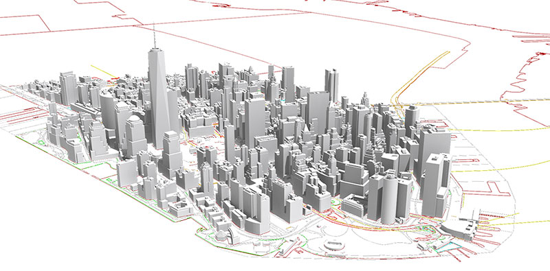 Citation: Department of City Planning. (2018). NYC 3D model by community district. NYC.gov. https://www.nyc.gov/site/planning/data-maps/open-data/dwn-nyc-3d-model-download.page
Image Caption: The 3D model includes data of every building in New York City as of 2014, based on an aerial survey conducted by the Department of Information Technology and Telecommunications (DoITT).
Urban Growth and Land Use Planning: Planners can model future land use, simulate development impacts, and conduct shadow analysis to assess sunlight blockage and viewshed impacts.
Environmental and Sustainability Analysis: Planners can assess risk factors and mitigate flooding impacts on city infrastructure by integrating climate and flood data with 3D buildings. 3D models help analyze the effects of green spaces, tree coverage, and green roofs, simulating their contribution to urban cooling and stormwater management. Planners can also use 3D data for solar exposure analysis, optimizing building orientation and roof design to support solar energy installations.
Utilities and Underground Infrastructure: 3D GIS allows utilities (like water, sewage, electricity) and underground structures to be mapped in 3D, helping avoid conflicts between different infrastructure elements and ensuring maintenance and emergency accessibility.
Read more about how urban planners are leveraging 3D analysis in ArcGIS here.
3.3.2. Humanitarian and Emergency Management#
3D GIS is an essential tool for disaster response, humanitarian aid, and crisis preparedness. It helps emergency responders, aid organizations, and governments make data-driven decisions in critical situations.
Disaster Risk Reduction: 3D models allow for the simulation of natural disasters such as earthquakes, floods, landslides, and wildfire–helping predict high-risk areas and improve evacuation planning. By overlaying data like population density or vulnerable areas, responders can strategically plan evacuation routes and resource allocation.
Post-Disaster Damage Assessment: After disasters, aerial LiDAR and photogrammetry-based 3D models rapid assessments of the extent of damage to buildings and infrastructure, which can aid post-disaster needs analysis and reconstruction efforts.
Search and Rescue Operations: 3D mapping of collapsed buildings and terrain post disaster assists in locating trapped individuals and guiding rescue teams.
Refugee Camp and Shelter Planning: 3D GIS is used to design temporary settlements, ensuring optimal land use, accessibility to resources, and efficient distribution of aid.
3.3.3. Environmental and Natural Resource Management#
3D GIS plays a critical role in monitoring ecosystems, managing resources, and protecting biodiversity.
Watershed Management: Analyzing drainage patterns and hydrological changes to assess water availability, erosion risks, and flooding potential.
For example, 3D models can integrate topographic elevation models with hydrology simulations to predict the direction of floodwater during periods of heavy rain.Landslide and Erosion Risk Assessment: Identifying unstable terrain and high-risk zones for proactive mitigation measures.
Deforestation and Climate Change Monitoring: Using LiDAR and satellite-based 3D models to assess tree canopy loss, carbon sequestration, and reforestation efforts.
Wildlife Conservation: Mapping habitats in 3D to track species movement, changes in forest density, and encroachments.
3.3.4. Architecture, Engineering, and Construction#
3D GIS supports the entire building lifecycle from design and construction to maintenance. By integrating geographic and architectural data, 3D GIS enables spatially accurate modeling of structures, improving planning, efficiency, and resilience.
Building Design and Visualization: 3D GIS allows architects and engineers to create detailed 3D models of buildings, providing realistic visualizations that enhance design accuracy and collaboration.
Structural Integrity and Risk Assessment: 3D GIS can be used to simulate how buildings and infrastructure respond to environmental hazards such as earthquakes, high winds, and floods, supporting disaster resilience and safer construction planning.
3.3.6. Telecommunications and Network Planning#
3D GIS is critical for expanding and optimizing telecommunication networks, ensuring efficient signal coverage, infrastructure placement, and connectivity improvements.
Cell Tower Placement: By analyzing terrain, building heights, and population density, 3D GIS helps optimize cell tower locations, maximizing signal reach and minimizing interference in both urban and rural areas.
Signal Propagation Analysis: 3D GIS allows engineers to simulate and visualize network coverage, improving service reliability in complex environments.
3.4. 13.3 What Are the Primary Sources of 3D Data?#
3.4.1. 1. LiDAR (Light Detection and Ranging)#
LiDAR provides high-resolution elevation data by measuring the distance to the Earth’s surface using laser pulses. A LiDAR sensor emits pulses of light, which bounce back after hitting objects or the ground. By calculating the time taken for each pulse to return, LiDAR generates precise distance measurements. When millions of these points are collected, they create a detailed 3D map of the environment, similar to painting with laser dots instead of brush strokes.
🎥 What Is LiDAR?
Video: What Is LiDAR and How Does LiDAR Work? – Phoenix LiDAR Systems (2022)
This video explains how LiDAR measures distances and creates accurate 3D maps using laser pulses.
3.4.2. 2. InSAR (Interferometric Synthetic Aperture Radar)#
InSAR is a remote sensing technique that uses radar signals to detect ground surface deformations with high precision. By comparing radar images captured at different times, InSAR reveals subtle changes such as land subsidence, tectonic shifts, or volcanic activity, making it invaluable for geophysical monitoring, disaster management, and infrastructure assessment.
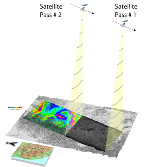 Image Source: U.S. Geological Survey
Caption: A satellite collects data during multiple passes over an area, with at least two passes required to generate InSAR images that reveal changes in ground elevation.
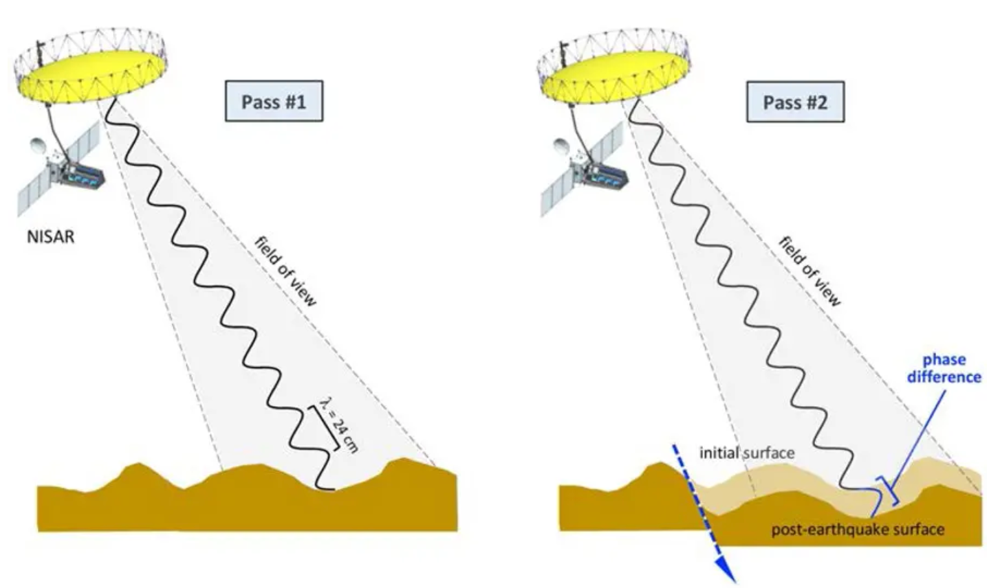 Image Source: NASA Jet Propulsion Laboratory
Caption: InSAR detects surface deformation by comparing the phase difference in radar waves from two satellite passes over the same location. If the ground moves between passes, the phase difference corresponds to the amount of deformation along the line-of-sight direction.
3.4.3. 3. Photogrammetry#
Photogrammetry is like using a camera to build a 3D puzzle. Photogrammetry uses overlapping images taken from different angles to create a 3D model of the landscape. By analyzing how objects shift between images, computers can measure distances and produce detailed elevation maps—similar to how your mind visualizes a sculpture when viewing photos from all sides.
Types of Photogrammetry Data Sources:
Aerial: Photos from planes or helicopters, ideal for regional maps and elevation models. Satellite: Images from space, suitable for large-scale studies like forests or coastlines, but with less detail.
Drone: Low-altitude photos for high-resolution models of small areas such as construction sites, archaeological digs, or urban planning projects.
Watch here:
Aerial Photogrammetry Explained
📌 This video explains how aerial photogrammetry uses drone photos to create 3D models, detailing the process and techniques involved.
Read here:
Drone Surveying: A Guide to Point Clouds
📌 Explore how drones are used for point cloud generation, enhancing surveying and mapping accuracy.
3.4.4. 4. Ground Surveying#
Ground surveying uses tools like GPS and total stations to measure and map exact ground elevations and locations, providing the highest accuracy for small-scale areas.
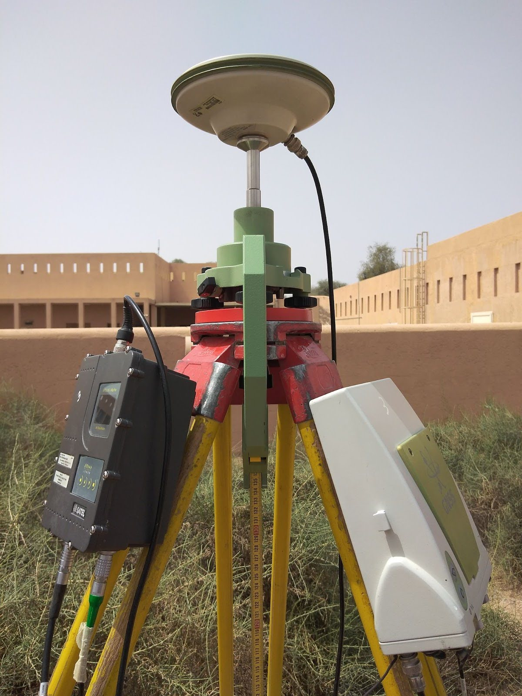 Image Source: Geotech3D
Caption: A precise GPS-based land surveying setup, including a GNSS receiver and tripod, used for accurate geospatial data collection in construction or topographical mapping projects. The equipment captures satellite signals to determine exact ground coordinates.
3.4.4.1. Techniques and Tools#
Total Stations: Measure angles and distances for precise positions, used in construction and engineering projects.
GNSS (GPS): Satellite-based systems for exact ground coordinates, often mounted on tripods for high accuracy. Leveling Instruments: Measure height differences, essential for topographic mapping and road construction.
3.4.4.2. Applications#
Construction: Setting up building foundations and verifying infrastructure placement.
Topographic Mapping: Creating detailed maps of parks, campuses, or small regions.
Boundary Surveys: Accurately marking property lines.
Image Source: Geotech3D Caption: A precise GPS-based land surveying setup, including a GNSS receiver and tripod, used for accurate geospatial data collection in construction or topographical mapping projects. The equipment captures satellite signals to determine exact ground coordinates.
3.4.5. 5. Simple Field Observations#
Field observations involve collecting data directly from the ground using tools like smartphones or GPS devices. Platforms like KoboToolbox make this process scalable and user-friendly.
3.4.5.1. Techniques and Tools#
GPS/GNSS Devices: Capture exact point locations, such as trees, infrastructure, or boundaries.
Smartphone Apps:
KoboToolbox: Custom surveys, geotagged data, photos, and field notes.
Survey123 by Esri: Integrates field data directly into GIS workflows.
Traditional Methods:
Field Papers: Print maps, take field notes, and upload them to OpenStreetMap (OSM).
Clipboards and Forms: Manual data collection in resource-limited settings.
🚀 In Focus: Using UAVs (Drones) to Generate Point Clouds
Unmanned Aerial Vehicles (UAVs) are revolutionizing 3D point cloud generation for geospatial applications. Equipped with cameras or LiDAR sensors, drones capture high-resolution data from the air, producing dense point clouds that represent the surface of objects or terrain.
How UAVs Generate Point Clouds:
Image Capture with Overlap
Drones fly in a grid pattern, capturing overlapping images to ensure each point appears in multiple images for accurate photogrammetry-based point clouds.Photogrammetry Processing
Specialized software (e.g., Pix4D, Agisoft Metashape) analyzes the overlapping images to identify common features and calculate their 3D positions using triangulation. The result is a dense point cloud representing the surveyed area.LiDAR Integration
For applications requiring higher accuracy or vegetation penetration, drones can be equipped with LiDAR sensors. LiDAR emits laser pulses and measures their return time to capture precise elevation and surface details, even through tree canopies.Georeferencing
UAVs often integrate GPS/GNSS data to georeference the point cloud, ensuring it aligns with real-world coordinates. Ground control points (GCPs) can further enhance accuracy.
Tools and Software for UAV Point Clouds:
Drone Models: DJI Phantom, Mavic, or Matrice series for photogrammetry; Velodyne or RIEGL-equipped drones for LiDAR.
Processing Software: Pix4Dmapper, DroneDeploy, Agisoft Metashape for photogrammetry; Terrasolid or CloudCompare for LiDAR data processing.
Visualization Platforms: CesiumJS, QGIS, or CloudCompare to analyze and display point cloud data.
Applications of UAV Point Clouds:
Construction Monitoring
Regular drone surveys create 3D models of construction sites for accurate measurements and progress tracking.Environmental Management
Analyze terrain, monitor tree canopy heights, and assess forest health.Disaster Response
Rapidly map affected areas, aiding in planning and reconstruction after disasters.
Benefits of UAVs for Point Cloud Generation:
High Resolution: Drones capture finer details than satellite or aerial methods.
Flexibility: UAVs reach difficult terrain such as forests or mountains.
Cost-Effective: More affordable than manned aircraft for small-scale projects.
Efficiency: Quick deployment and fast data collection for time-sensitive tasks.
The Future of UAV Point Clouds:
As UAV technology advances, drones are becoming indispensable in fields like urban planning, environmental management, and disaster response, offering high-accuracy, real-time 3D data collection.
3.5. 13.4: 3D and the OSM Data model#
To use the OpenStreetMap (OSM) data model for storing 3D data, it is essential to understand and utilize the appropriate tags created to represent three-dimensional attributes of buildings and other structures.
Here is a guide on how to apply the OSM data model for 3D data: 3D Tagging in OpenStreetMap
{kind=link}